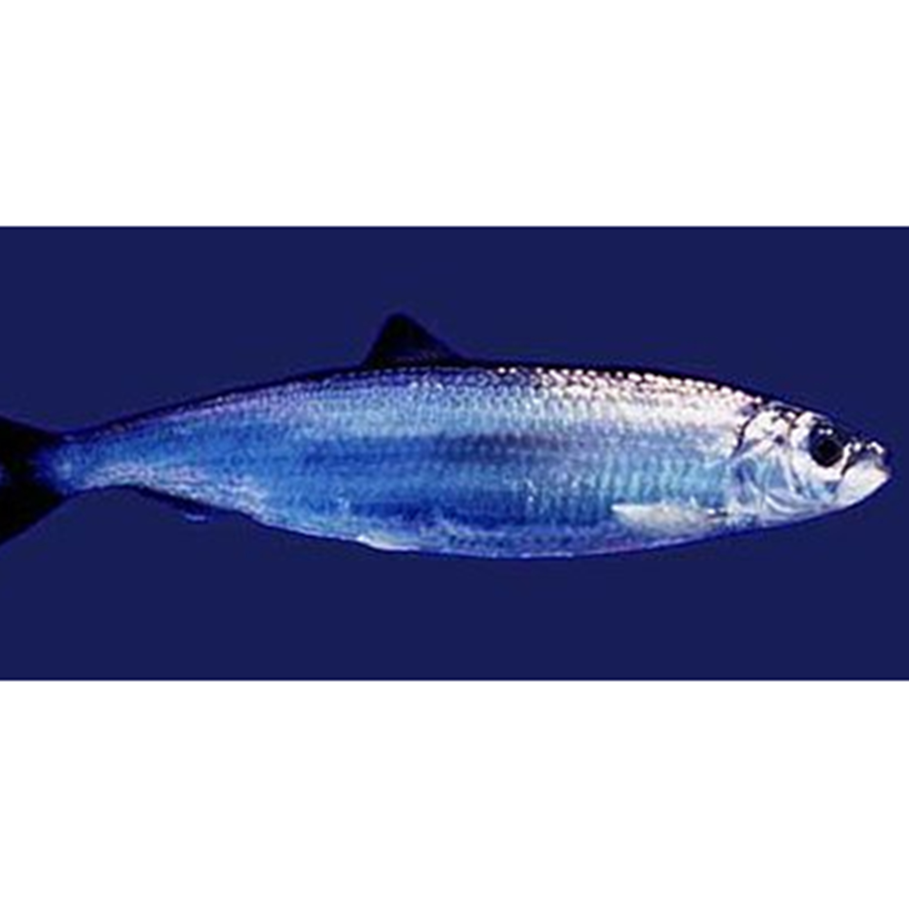

Ikan Haring
Haring atau herring merupakan ikan pelagik kecil yang menjadi makanan predator yang lebih besar darinya; sebagian besar ikan haring termasuk keluarga Clupeidae. Mereka sering bergerak dalam kawanan besar di sekitar bagian laut yang dangkal (seperti gosong pasir atau gunung bawah laut) dan dekat pantai. Spesies yang paling berlimpah jumlahnya dan penting secara komersial adalah yang termasuk dalam genus Clupea, utamanya terdapat di perairan beriklim sedang dan dangkal pada Samudra Pasifik Utara dan Atlantik Utara, termasuk Laut Baltik, serta lepas pantai barat dari Amerika Selatan. Ada tiga spesies Clupea yang telah dikenali, dan memberi kontribusi sekitar 90% dari seluruh penangkapan ikan haring dalam perikanan. Yang paling banyak dari semuanya adalah haring atlantik, kontribusinya lebih dari separuh dari seluruh penangkapan haring. Ikan-ikan yang disebut haring juga ditemukan di India, di Laut Arab, Samudera Hindia dan Teluk Benggala.
Ikan haring memainkan peran penting dalam sejarah perikanan laut di Eropa, dan di awal abad ke-20 penelitian atas ikan-ikan tersebut menjadi dasar bagi evolusi ilmu perikanan.Ikan berminyak ini juga mempunyai sejarah panjang sebagai suatu ikan makanan yang penting, dan seringkali diasinkan, diasapkan, atau diasamkan.
Kandungan Ikan Haring (dalam 100 gram)
| Protein (g) | Kalori (Kal) | Lemak (g) | Besi (mg) | Kalsium (mg) | Fosfor (mg) | Vit A (SI) | Vit B1 (mg) | Kolesterol (mg) | BDD (%) |
|---|---|---|---|---|---|---|---|---|---|
| 18 | 158 | 9 | 1,1 | 57 | - | 93 | 13,7 | 44 | 70 |
Manfaat Ikan Haring
- Mengandung Protein untuk Pertumbuhan Otot
- Meningkatkan fungsi otak
- Mencegah anemia
- Mengobati Diabetes
- Kesehatan kulit
Protein merupakan unsur penyusun utama tubuh manusia. Seluruh jaringan tubuh manusia merupakan himpunan protein-protein yang kompleks. Seperti otot manusia juga terbentuk karena protein. Bila anda ingin otot besar seperti pemain binaraga, maka banyaklah makan protein yang terkandung di dalam ikan Haring misalnya.
Otak manusia terdiri hampir 60% lemak, sedangkan ikan haring adalah sumber lemak baik (omega-3). Fakta inilah yang mungkin melatar belakangi banyak penelitian untuk melihat manfaat ikan herring bagi kesehatan otak. Penelitian telah menunjukkan bahwa orang yang rutin mengkonsumsi ikan laut memiliki risiko lebih kecil untuk menderita demensia dan masalah memori di kemudian hari. Selain itu omega-3 yang ditemukan dalam makanan laut, juga diketahui dapat meningkatkan kemampuan anak dalam berfikir, berkonsentrasi dan keterampilan membaca.
Anemia adalah suatu kondisi dimana terjadi defisit sel darah merah di dalam tubuh. Hal ini sering dipicu rendahnya asupan mineral seperti zat besi dan vitamin B12. Meskipun anemia sering dianggap sebagai penyakit ringan tetapi dalam beberapa kondisi seperti hamil, bisa membahayakan jika masuk tahap kronis, untuk itu sangat penting bagi kita memenuhi kebutuhan kedua nutrisi tersebut terutama bagi ibu hamil. Ikan haring bisa dijadikan salah satu solusi untuk mencegah anemia karena ikan ini mengandung protein yang berfungsi sebagai sumber asam amino, yang dibutuhkan tubuh untuk memproduksi hemoglobin. Jadi dengan mengkonsumsi ikan ini, anda akan sangat terbantu dalam mencegah anemia.
Diabetes sebenarnya tidak ada obatnya. Pengobatan Diabetes akan terus dilakukan seumur hidup mengingat ini penyakit yang tidak bisa disembuhkan. Meski tergolong penyakit mewabah yang menimpa banyak orang dan sudah banyak kasus terjadi. Namun tingkat kematian akibat Diabetes masihlah amat tinggi. Supaya anda terhindar dari penyakit mematikan Diabetes, sebaiknya anda mengonsumsi olahan makanan berbahan dasar ikan Haring. Tenang saja, ikan ini cukup merajai pasar ikan internasional. Jadi di semua negara pasti ada.
Ada bayak manfaat yang akan anda dapatkan dari mengkonsumsi ikan haring, terutama dari kandungan omega-3 nya. Ikan ini dapat membantu meningkatkan kesehatan kulit jika dikonsumsi secara teratur, omega-3 dalam ikan haring selain dapat melindungi kulit dari sengatan sinar UV ternyata juga dapat membantu meringankan beberapa masalah kulit seperti eksim dan psoriasis. Penting untuk diketahui jika ikan seperti herring tetap tidak boleh dikonsumsi secara berlebih. Karena ikan seperti herring juga mengandung beberapa lemak sehingga jika dikonsumsi secara berlebih justru akan memberikan efek buruk bagi kesehatan. Mengkonsumsi ikan herring dua kali seminggu tampaknya sudah cukup untuk mendapatkan manfaat dari ikan ini.